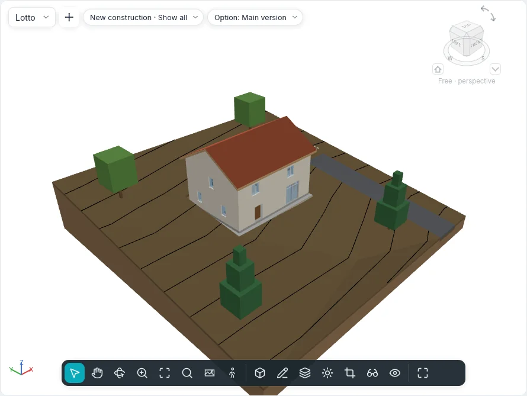

Site plan and terrain
The ground the building stands on and the drawings of the lot around it are made with Massing & site ▸ Site and Edit site. They work in floor plans and in the Site plan; a terrain and a building pad are also sketched in 3D views, on the plane of their level.

Terrain
A terrain is a solid: a sketched outline (with holes) on a level, shaped by points, with the layers and thickness of its type.
Terrain ▾ has two ways:
| Way | How it works |
|---|---|
| Create from sketch | Sketch mode Create Terrain Boundary, with the shared Draw group (lines, rectangle, polygons, circle, arcs, Pick Lines). Draw a closed loop; a loop inside it is a hole. Finish Edit Mode makes a flat terrain, its top at Height Offset From Level |
| Create from import | The dialog Add points from selected layers: the layers of a DWG or DXF imported with heights (3D lines and points) whose points shape the terrain, or Create from points file… (CSV or TXT, its unit chosen in Format) |
A file of points gives on each row x, y and z first; names and other columns are skipped, and two points at the same x, y keep the higher z. Beyond the limit of Site settings (20,000 points by default, 10,000–50,000) the points are sampled down to it and a message says how many were kept.
Shape editing
A selected terrain shows the group Shape editing:
| Tool | How it works |
|---|---|
| Add point | Click inside the outline. In the options strip: Absolute (the Elevation typed, from the Elevation base: current level, project base point, survey point, internal origin) or Relative to surface (an offset above or below the surface where you click); XYZ snaps take the elevation of a floor's corner or a wall's end, plus Offset from snaps |
| Modify sub elements | Click a point: drag it in plan, or type its height above the terrain's original top |
| Add split line | Two clicks: a fold of the surface, straight between their elevations |
| Reset shape | Removes every point and split line |
| Simplify terrain | Keeps a share of the points (1 000 points at 70 % become 700) |
The surface is triangulated through the outline and the points; the contours follow at once.
Type, layers and contours
The terrain's type has its Structure in the same Type layers dialog as walls and floors: the layer marked Variable takes up the shape, so the bottom stays flat. Contour display (Contour display in the terrain's panel) lists groups of contours: Start, End, Increment, Single value or Multiple values, the line style (primary, secondary, hidden lines, triangulation edges) and a check box to turn a group off. A new project draws primary contours every 5 m and secondary ones every metre; the types Asphalt road, Gravel path and Sidewalk draw none.
The contours are drawn on the terrain in 3D views too, in their line styles, hidden where the building stands in front of them.
In a section the terrain is cut with its layers and their materials' patterns. A Spot Elevation placed on the terrain reads its elevation there.
Visibility and Graphics ▸ Terrain has the subcategories Primary contours, Secondary contours, Hidden lines, Fold lines, Boundary points and Interior points; the last three are off unless turned on.
Site options ▾ ▸ Terrain smooth shading makes every terrain smooth in the shaded styles.
Site options ▾ ▸ Cut void stability: a cut that does not come out whole is tried again with its outline moved a few millimetres along x or y; Excavate says how many cuts were moved.
Editing the terrain
| Tool | How it works |
|---|---|
| Sub-area | Sketch a loop on the selected terrain (or click a terrain first). Its Type gives its material; Sub-area offset raises it (a kerb) or sinks it into the host (with its Excavation volume) |
| Divide terrain | Click the terrain, then sketch a closed loop inside it or open lines from edge to edge. A sub-area the division cannot keep asks for Delete instances |
| Merge terrains | Click the main terrain, then the second: they must share an edge or overlap. Remove points along shared edges is on by default |
| Excavate / Remove excavation | With the terrain selected, click a floor, a roof, a building pad or another terrain that crosses it. Individual excavation volume lists each cut |
| Grading | Edit graded region asks for an exact copy or only the boundary's points; click a terrain of an earlier phase. It is demolished in the current phase and its copy, new, opens in shape editing. The copy reports Cut, Fill and Net cut/fill |
A schedule of Terrains lists the cut and fill, with a grand total.
Building pad
Building pad sketches a closed loop over a terrain (Create Pad Boundary, with Pick Walls and Slope Arrow). Its top is at Height Offset From Level; the terrain under it is cut or filled to its underside. Its type has a Structure of layers and the low detail fill pattern.
Site elements and parking
Site element places trees, shrubs, benches, street lamps and hydrants, one at a click (space bar to rotate); Parking places parking spaces (90°, 60°, 45°, parallel, accessible). Both stand on the terrain or sub-area under the click and follow it when it changes. Pick New Host moves them onto another terrain or sub-area; Repeat in Series makes rows of them.
Property lines
Property line asks how to create it:
- Create by sketching: the lines of sketch mode; an open loop warns that its area cannot be computed (finish again to keep it open);
- Create by entering distances and bearings: the table Property lines, a row per run with Distance, Bearing (as N 45°00'00" E), Type (line or arc), Radius and L/R; Insert, Delete, Up, Down, and Close, which adds the run back to the start. The runs follow true north.
A selected property line shows Edit table. Site options ▾ ▸ Property data sets the Angle display (bearing or degrees) and the units. Property lines show in site plans and 3D views by default; a schedule of Property lines lists their name and area.
Contour labels
Contour labels: click the start and the end of a line across the contours; each contour it crosses shows its elevation, turned to read from project north. The label's type sets the text and whether only primary contours are labelled.
The site plan
Every new project has a Site plan; Views ▸ Plan ▾ ▸ Site plan makes another, for the active level: 1:200, cut above the building down to 10 m below the level, oriented to True north. Orientation in its properties turns it back to Project north.
Site settings
Site options ▾ ▸ Site settings holds the project's contours (for the terrain types that do not set their own), the Section cut material and Poché base elevation of terrain types without layers, the property data and the most points an import keeps.
Not yet
Terrain from face, Link topography and Surrounding context come in a later phase.